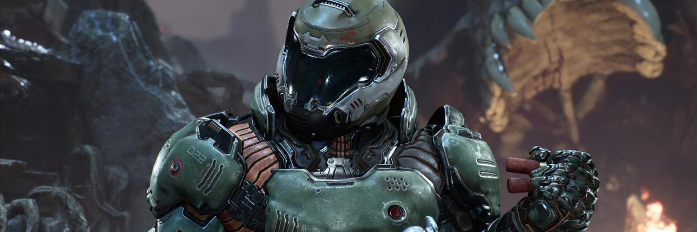
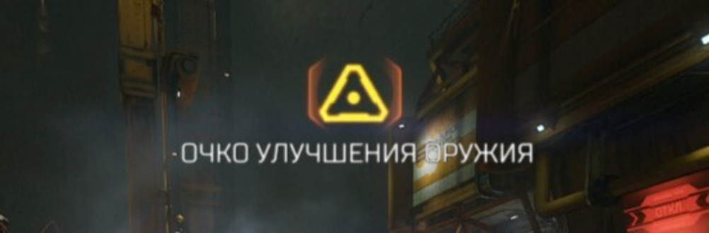
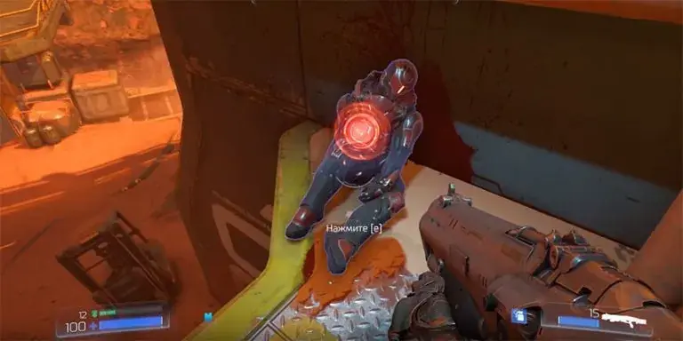
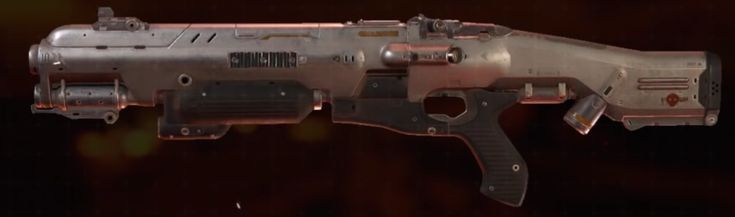
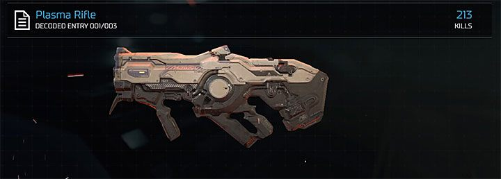

DOOM SLAYER

Что такое цена ошибки и причем тут DOOM?Цена ошибки это значимость оплошности совершаемой тобой. возмём в пример сложность кошмар на которой демоны по тебе вносят столько же урона как и на абсолютном кошмаре,но тот факт что ты имеешь возможность после смерти очучиться в пяти секундах от арены на которой ты и умер сводит её к минимуму.Hо на сложности абсолютный кошмар цена ошибки достигает критическово значения заставляя тебя перепроходить всю игру при смерти с самово начала.Игра на Абсолютный кошмар кидает тебя в стену после спокойного и размереного первово прохождения,заставляя тебе научиться в неё играть, заставряя придумывать стратегию и тактику прохождения, заставляя пользоваться игровыми механиками которыми ты раньше не пользовался, заставляя играть тебя в DOOM.

ОЧКИ УЛУЧШЕНИЯ ОРУЖИЯ это одна из важнейших состовляющих вашего забега с помощью которой вы сможете прокачивать оружия, и выполнять испытания мастера при полной прокачки оружия о которых позже.

ЖЕТОНЫ ПРЕТОРИАНЦА собираем все, но вопрос что качать первым был у меня на протяжении всех забегов. 1.качаем всю ветку ЗАЩИТЫ ОТ ОКРУЖАЮЩЕЙ СРЕДЫ. 2.качаем БЫСТРУЮ СМЕНУ ОРУЖИЯ. 3.качаем всю ветку УСИЛЕНИЙ. 4.качаем ветку с предметами снаряжения до максимума. 5.качаем скорости взбирания на уступы все остальные навыки бесполезные.
ДРОНЫспрятаны по уровням в количестве от 1 до 2 штуких местонахождение нужно заучит как и в случая с любым другим колекционым предметом который сможет помочь вам в забегехотя в ситуации сдронами нужнособрать всего 6 дроновпо 1 на каждую пушкуна пушку можно ставить 1 обвес из 2 предложеныхя рекомендую ставить модификации из 2 ветке ниже объясню подробнее

ДРОБАВИК Ваше самое первое оружие на ближайшие два уровня главное оружие для убийства демонов берите на нево модуль микроракеты из-за мобильности,урона по области, и траты всего 1 патрона,а не 3 как модуль шквальный огонь. Советую не тратить на него очки улучшения оружия так как на 3 уровне мы вкачнём винтовку и дробавик станет менее востребованным, а на 4 уровнемы мы получаем супердробавик после чего вы забудите про обычный дробавик
